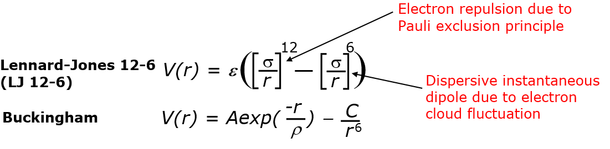

Non-bonded functions¶
While the bonded components mainly resposible to maintain the molecular structures, the inter-molecular functions are mainly responsible to model the overall behaviour of the system model such as densities, molar volumes, heats of vapourisation, etc.
Non-bonded functions are mainly composed of two components: the short-ranged van der Waals (vdw) interactions and the long-ranged electrostatic interactions. These energy components are calculated based on interactions between pairs of atoms and the functions depend only on the interatomic distances.
Note
For atoms within a molecule, non-bonded interactions will apply on the 1-4 atoms (atom pairs that are seprated by three successive bonds) onwards.

Electrostatic interactions
The Coulombic functions are usually used.

As will see later in the page relates to cutoff distances, special methods would be needed to more accurately to sum them up.
van der Waals interactions
There are many types of functional forms, the commonest are as follows:
{kind=link}
As you can see, the functions consist of two components: positive terms that describe the electron repulsion due to the Pauli exclusion principle and negative dispersive terms due to electron cloud fluctuations.
Lennard-Jones 12-6 is commononly used in organic systems and condensed phase systems. There are other forms, such as the LJ 9-6, which is used by the PCFF force field scheme. On the other hand, the 9-3 form is used for adsorption of LJ walls. More about LJ function will be discussed later.
The Buckingham form is normally used in inorganic systems such as ionic oxides. The Pauli repulsion is more accurately described by the exponential term. There are three constants: A which affects how high the energy barrier rises and both \(\rho\) and C affect the size and shape of the function graph.
Due to convergence nature of the exponential term as r -> 0, an unphysical ‘well collapse’ can occur at small distances, and the nature of the collapse can be different depending on the combinations of the three constants. However, this can be masked by the electrostatic function for ion pairs of the like-charges.